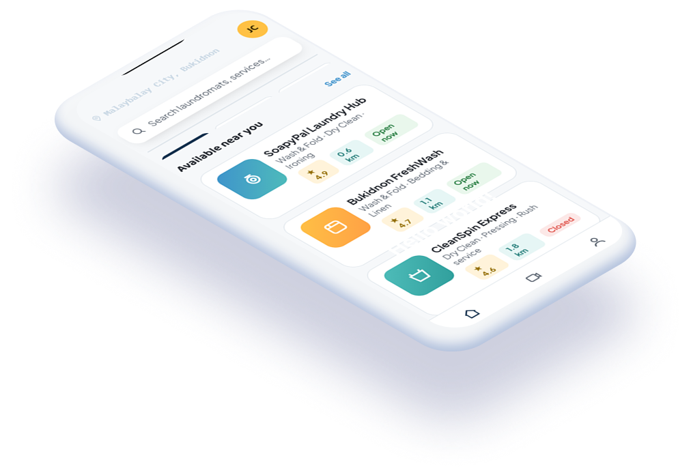
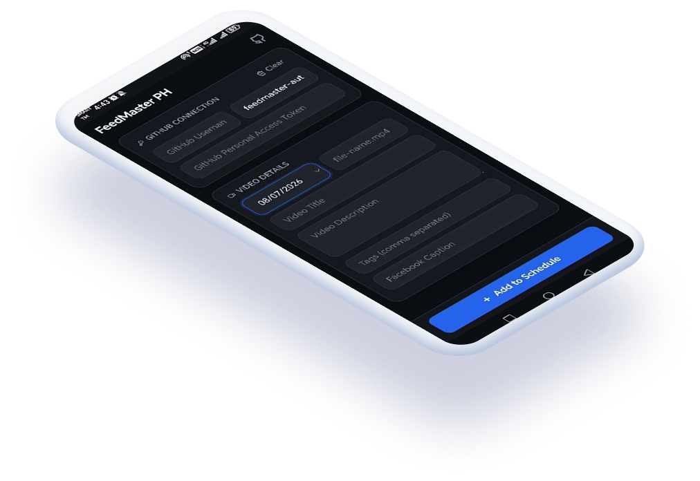
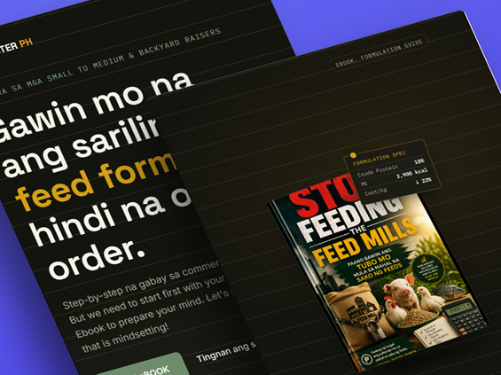
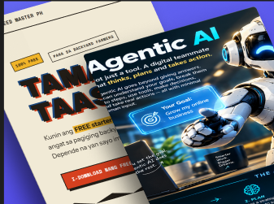

From scaling logistics teams to building practical software, I turn messy workflows into systems people can use.
Two logistics engagements, agriculture ventures and sales, construction works and a government research and production career — each one building on the last.
From logistics operations to practical software, these are projects shaped by real workflows, real users, and a bias toward getting things done.
Laundry, without the runaround.
An on-demand pickup and delivery experience built around the realities of coordinating customers, laundromats, and riders.

A lightweight PWA to organize publishing schedules and reduce repetitive upload work.

A digital learning platform helping Filipino backyard growers explore feed formulation and livestock management.

A landing-page and automation workflow connecting campaign leads to organized follow-up data.

Rider recruitment & training, quota/KPI growth, team scaling, third-party logistics coordination, Rice-Poultry-Swine Production
Sales & business development, commission-based sales, feed formulation consulting, startup management.
Self-taught programmer (HTML, CSS, JavaScript, React Native, Next.js, Supabase, payment gateway integration, CI/CD automation), Driving, Scaffolding works and Carpentry, Pests and Disease Management,